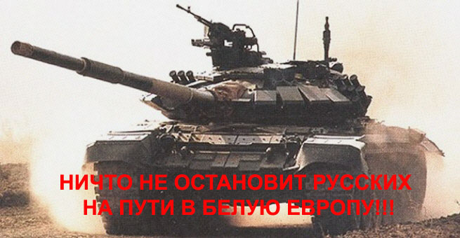

Warrax
Размышления о «НС-интервенции»
|
Warrax: И понятно, что квартира, в которой я обитаю, не имеет никакого метафизического статуса, но тем не менее, тот, кто пытается ее отнять/ограбить/разрушить и т.п. — мой враг. Hateful Bruxa: Он враг Андрея Борцова, но не сатаниста Варракса. Если так чётко разделять физическое и метафизическое. Если доводить до абсурда, то, предположим, некий сатанист, весьма правильный, по какой-то причине решил ограбить твою квартиру. Он тебе враг? Потому что покусился на материальную собственность А.Б.? Или он соратник, поскольку вне материального вы оба стоите по одну сторону баррикад?
|
Началось все с того, что Massell разместил у себя в ЖЖ провокационный пост.
|
Предположим, что каким-то образом за рубежом возникает национал-социалистическое государство, на практике реализующее расистские, евгенические и технократические идеи. Предположим, там нет никакой дискриминации тех белых национальностей, которые не принадлежат к государствообразующей, и их лидеры НС-государства рассматривают как потенциальных равноправных граждан. Предположим, что данное государство достаточно сильно и амбициозно, чтобы вести войну против нынешней западной цивилизации и за объединение всех белых народов воедино. Предположим, что одновременно в России существует аналог нынешнего путинского или давнего сталинского режима... Войска НС-государства переходят нашу границу с твердым намерением присоединить Россию к своей территории. Т.е. не раздробить на государства-сателлиты, а именно инкорпорировать русских на равных с другими белыми правах в общество национал-социализма. Ведется соответствующая пропаганда, подтверждающаяся происходящим на оккупированных территориях. Существующий в России режим призывает русских проявить патриотизм, ставить в пример предков, Суворовых/Невских, и сражаться за независимость. Раздувается европофобия, дозированно выдается русский национализм, нынешний интернационал в лице евразийства особо не выпячивается. Так вот: на чьей стороне вы бы предпочли сражаться и почему? |
Считаю, что вопрос имеет смысл разобрать — Масселл ловко выцепил суть провокационных опросов, которые уже не раз были в интернете. Этим мы и займемся.
Примечание: я не буду проставлять копирайты. Важно, что говорилось, а не кто говорил. К тому же, часть мнений, с которыми я не согласен, озвучено теми, кого я уважаю — и я не хочу инициировать конфликт в данном случае.
Уведомление. Я не пишу полноценную статью, лишь заметки по поводу.
«За» и «против»
|
— Кто быстрее?! — крикнули пионеры и со всех ног бросились к мавзолею. |
Не буду вести подсчет голосов «кто выиграл» — во-первых, это бессмысленно, во-вторых, куда интереснее обоснованность мнений. Не учитываются ответы «против всех» и тому подобные, хотя один меня очень порадовал: «Лично я буду сражаться за Рейх Адольфа Гитлера». Особенно с учетом дальнейшего: «Поясню — я буду за парней в фельдграу, кто верит, что был и есть один Рейх, один Народ и один Фюрер». Вот у кого форма не того цвета, так и всё, не подходят.
Примечание: данные на 07:00 27/05/2007.
Против интервентов:
«На стороне своей страны, разумеется. Ибо как жить, и каким образом, это наше дело, а на то, что кто-то придет и сопли вытрет, пусть другие надеятся. К тому же, мы все же мощная держава. Да и никогда побежденным не было хорошо от победителей».
«Есесно, я буду убивать “освободителей”. Все другие варианты ответа обусловлены малым общением с иностранцами. Это ПРОПАСТЬ, абсолютно непреодолимая дыра в менталитете. Причём между европейцами её нет, она есть между европейцами и русскими. В лучшем случае мы будем жить в резервациях».
«За Россию».
«Фи. Вопрос из серии “а если прилетят инопланетяне, все такие разумные-преразумные, и начнут убивать неразумных людей, то вы на чьей стороне будете?”
Системная ошибка: ситуация крива донельзя. Все просто — стоит лишь немного подумать. Пусть действительно появилось такое вот — как описано, один-в-один — НС-гос-во. Всё такое из себя благородное, что готово за свой счет помогать братьям по расе.
Внимание, вопрос в студию: а если они все такие честные, то почему они не стали помогать НС-движению в России — деньгами, оружием и т.д. и т.п.? Скажем, наши добровольцы сражались в Косово на стороне сербов — почему бы этим НС не отправлять русским националистам на помощь аналогичных добровольцев или даже спецназовцев — в порядке братской помощи, так сказать? Обобщая: почему они не помогают русским НС взять власть у себя в стране?
Вместо этого они, знаете ли, идут войной, заявляя, что идут помогать. Вариация старой сказочки “Гитлер-освободитель”, вот и всё.
Собственно говоря, даже честно написано: “присоединить Россию к своей территории”. Т.е. — насадить свои законы/порядки. Что будет означать, что русского порядка уже не будет. Будет некий “бело-НС-в-вариации-того-государства”. Это — тоже сказочка, хотя и не настолько старая: “русские должны перестать быть Русскими и стать Цивилизованными Европейцами, а кто против — тот совок”.
Таким образом, даже если не учитывать вопрос “с какого бодуна верить таким заявлениям — что мы, европейцев не знаем, что ли?”, то все равно сдаться, не говоря уже о войне на стороне противника — предательство русской нации. Именно нации, а не правительства и т.п.
Теперь думаем далее. Что мы получим в результате войны? А получим мы армию. Вооруженную. Состоящую в основном из русских. Среди которых уже значительно больше половины разделяют лозунг “Россия — для русских”, а уж положительно относится к правительству — ещё не дельта малое, но близко к этому. Война очень быстро выделяет лидеров, способных действовать в экстремальной обстановке. Т.е. русские получат тех, кого сейчас как раз не хватает. И в этом варианте широко рекламируемый вариант “отбросить врага, затем заменить правительство” очень даже вероятен.
Причем у Кремля тут положение безвыходное: и вооружать народ нельзя, и армии сдаться не прикажешь.
Таким образом, следствием нападения с очень большой вероятностью является становление русского НС-государства, хотя и ценой очень больших жертв. Спрашивается: и зачем же идти на сторону противника в такой ситуации?»
«Да, примерно так» (соглашаясь с написанным выше).
«1. “Освобождение”, влекущее за собой подчинение “освободителю” — это не освобождение, а смена хозяина.
2. Как ты считаешь, достоин ли называться арийцем тот, кто принимает чужие подачки и позволяет посторонним распоряжаться своей судьбой?»
«Ключевое тут именно что присоединение, т.е. по сути — завоевание. Так вот, не важно, кто и с какими намерениями идет завоевывать нас или нашу территорию — я буду придерживаться позиции “Кто с мечом на Русь пришел, тот от меча и погибнет!”. Т.е. эти захватчики будут подлежать такому же уничтожению, как и нынешнее коррумпированное гос-во, но сначала будут убиты захватчики, а потом уже начнутся внутренние разборки.
Совсем другое дело, если они будут помогать русскому НС движению ресурсами. Тогда и отношение к ним будет, как к союзникам».
«Да, забыл ответить по вопросу: “на чьей стороне вы бы предпочли сражаться и почему?”
Я бы предпочел не сражаться, а просто “экспортировать идею и строй”, небольшой coup d'état. Но если при этом придется пролить несколько сотен кубических тонн крови “патриотов” современной России всех мастей — то поддержал бы такой вариант не задумываясь.
Я не откидываю варианта, что собственных сил будет недостаточно, так что потребуется интервенция и возможен вариант временного сотрудничества с военными и разведывательными структурами третьих стран. Понятно, что потом с ними придется тоже разбираться, но это вопрос второй».
«По условию задачи, получается нечто аналогичное 1941, только рафинированное. Если некое Х гос-во вторгается на территорию России с целью присоединение оной к своей, то это захватчики, которых надо бить. Какими бы они ни были распрекрасными.
Вариант второй: Х приходят с целью строить в России именно русский НС. Фактически это и есть пример братской помощи, причём пример крайний, поскольку для начала им было бы разумно провести переговоры с нашими камрадами, организовать какую-то пропагандистскую кампанию для русского населения. Исторический процесс, как-никак, не дискретен, а происходит в течение некоторого времени; просто так с бухты-барахты вторгаться никто не будет — так не бывает. А если и так — получается случай №1.
Резюмируя, ответ задачи зависит от того, для чьей выгоды происходит вторжение:
1) ради русских
2) ради внешнего НС».
«За Россию.
Вот *** ключевое слово тут подобрал — “сотрудничество”. Этим, по-моему, вопрос и решается. Смысл завоевывать Россию у НС-Государства, тратя финансовые и человеческие (ценные, белорасовые) ресурсы, если действительно можно сотрудничать и поддерживать движение НС в данной стране? Значит не все так просто и замечательно, как казалось бы... Хорошая задачка. Красивым — шаг влево, умным — шаг вправо. А куда ж обезьянке?»
«Как я понял, нам предлагается перестать быть “Россией и русскими” и стать “Уайтлэндом и уайтлэндцами”. Вопросы языка, культуры и прочие “мелочи” остаются за кадром.
То есть, война за... название? За самоидентификацию, ага?
Да, в этом случае для меня лично будет самым приемлемым вариант номер три. Воевать с агрессором, после победы наши танки въедут в Москву, сменим власть на свою и... дальше будет видно».
«О да, канэшн. Переходят нашу границу, прячут танки за спину и начинают агитировать за мир и объединение.
Я боюсь того дня, когда умрет последний человек, помнивший, чем была Отечественная, а не выстроивший себе теорию на основе словоблядства. Ибо в спермотоксикозных головах молодых людей начнется не поддающийся описанию и не сдерживаемый ничем пиздец.
И еще в условиях задачи не сказано, с какого х... этому гос-ву понадобилось “инкорпорировать” Россию, если оно настолько сильно и амбициозно».
«Вот сколько уже было опросов с темой — вот к нам приходят эти самые Белые труЪАрийские освободители, ну до хрена замечательные, сражайся за них.
Сущность этих освободителей хорошо известна “... Тог же лета изыдоша коркодили лютии звери из реки и путь затвориша; людей много поядоша. И ужасошася людие и молиши Бога по всей земли. И паки спрятошася, а иных избиша.” — но все равно, убедают и убеждают, что на самом деле крокодайлы эти — белые и пушистые. Ню-ню.
Мол, русским будет под ними замечательно и шоколадно. Только вопрос — а кого будут считать русским? Что-то мне подсказывает, что этот отбор пройдет только пара яровратнутых бобровольцев. “Истинно Русский — это тот, кто считает, что русские предали Белую Расу, а 70% русских — тупое быдло, выродившиеся скоты, азиопские рабы и т.д.” В общем — платить и каяться!. Вот это и будут Истинно Русские (несколько процентов наберется) — а все остальные совки, ымперцы и азеопцы, фтопку их.
И на любой писк о РУССКИХ интересах будет напомнено, что все в Белой Расе равны, но некоторые равнее. “А уж не скрытый ли ты совок-азиоп-ымперец? А ну каяться за предательство Белой Расы! И поубедительнее, поубедительнее! Вон те месторождения вполне подойдут!”
Если эти “освободители” пойдут с призывом “покайтесь, совки, перед нами!” — то на джамбулате любви вертел я эту Белую Эуропу.
ЗЫ. Если бы этим гипотетическим НС-государством была бы нынешняя Белоруссия — я бы первым побежал в ее армию записываться. А все остальные возможные кандидаты строем идут на йух, поскольку мне глубоко плевать, под каким соусом подается ”Платить и каяться” — под демократическо-глобализационным или НС-овским».
«Любое НС-государство в любом случае базируется на основе одной нации, а все остальные являются всегда дополнением к той самой основной нации и вынуждены под неё подстраиваться, поскольку различия между белыми народами всегда были, есть и будут. Даже американский расизм (а ведь современный расизм гораздо больше подвержен американскому влиянию, нежели чем 60 лет назад), объединивший белых людей Нового Света, в любом случае имеет под собою общую основу в лице английского языка хотя бы, что уж говорить про остальные привычки и правила. И приход людей, отличающихся от русских бытовыми традициями, образом жизни, поведением и т.д. ведёт к их превращению в нерусских. И если кому-то охота отдать себя за победу идеологий, отрицающих русскую самостоятельность и независимость, то пусть отдаёт. Только он тогда не русский. И тогда этот НэСэ не отличается от “поганого совка” или “хрюса мракобесного”. С чем его и можно поздравить».
«При всей нелюбви к России — именно за то государство, в котором живу, а не за завоевателей. Предателей никто, нигде и никогда не уважал + к тому, как здесь уже было написано, мне весьма интересно, что это за НС-“освободители” такие, которым необходимо наши территории ЗАВОЕВАТЬ?
Очень уж всё это подозрительно. Да и вообще — “горе побеждённым”, там, действительно, — хз кто будет решать, насколько ты “хороший русский”?
Стоит только вспомнить, как писали об расстрелянных наступавшими советскими войсками немецких коммунистах, искренне жаждавших встретить в них союзников...»
Итого: ответов с обоснованиями (без учета «степени доказательности», важна именно попытка) — 86.7% (при этом согласие «примерно так» я не зачел за обоснование, хотя можно понять и как «то же самое хотел написать, просто за меня все сказали»). Ответы «а как же иначе-то, никаких обоснований не надо!» отсутствуют, 0%.
За интервентов:
«Естественно на стороне НС. Иначе идиотизм получается».
«немного нипопадаю в расклад патаму как с Украины но только на стороне НС даже если украинские официальные власти против....»
«Ну если полностью абстрагироваться от текущей ситуации, то мои личные взгляды в гораздо большей степени совпадают с взглядами этого НС государства-агрессора, нежели путинской России. Более того, если НС-государство собирается предоставить русским полный объем гражданских прав (т.е. по сути возможность всецело влиять на политику этого НС государства) не вижу смысла этому противиться. Я — на стороне НС государства».
«Кшатрии всех стран, объединяйтесь! В утопических условиях задачи — за НС».
«Ясен хрен, любому здравомыслящему русскому следовало бы то гипотетическое НС государстово поддержать, если исходить ИЗ СУЩЕСТВУЮЩИХ НА СЕГОДНЯШНИЙ МОМЕНТ РЕАЛИЙ. А они таковы, что подобная ситуация сильно повысила бы шансы русского народа на выживание».
«за НС разумеется».
«На стороне Европы, по-моему для НС иного варианта и быть не может».
«На стороне НС, разумеется.
Другие варианты ответа (включая введение дополнительных условий и рассусоливание ситуации, без прямого и чёткого ответа) означают, что отвечающий не является НС, вот и всё. Он может быть патриотом (в т.ч. в хорошем смысле этого слова), может быть националистом, может быть кем угодно — но НЕ НС!»
«За НС против поганой рашки, даже без вопросов».
Итого: ответов с обоснованиями — 11.1%. Ответов «только так и без вариантов, что тут думать-то» — 62.5%
Конечно, база для статистики маловата, но тем не менее тенденция — налицо.
«Судя по тому, с какой частотой в среде НС поднимаются подобные вопросы, создается впечатление, что очень многие НС относятся к своей идеологии так, как фофудьеносцы — к учению церкви. Или как очень тупые и упертые коммунисты — к генеральной линии партии.
Т.е. предполагается, что национал-социализм — это не инструмент для достижения блага той или иной нации, а какой-то идол, перед которым надо бухаться на колени и всячески ему “служить”».
А чему именно служить, какой именно НС и все такое — остается за кадром в категории «и не интересно». Особенно мне понравилось, что попытки разобраться в ситуации приравнены к «рассусоливанию».
Получается как бы рефлекс:
— НС! Служить!
— Гав! Jawol!
Сферический вакуум
|
Людей мучают не вещи, а представления о них. Эпиктет |
Давайте посмотрим на задачу as is.
Заявлено, что есть намерение «инкорпорировать русских на равных с другими белыми правах в общество национал-социализма».
А, извините мою занудность, в какое именно? Как оно устроено-то? Давайте подумаем, честно оставаясь в рамках условия задачи.
Это самое НС-государство создает на территории Европы единую белую нацию, и русских собираются присоединять. Казалось бы — обычное причинение добра, но не более того. Все дружно объединяются в одну Великую Европейскую Нацию, и наступает Общее Щасте и Благорастворение Воздухов.
А если подумать?
Если подумать, то мы имеем размывание границ между нациями. Нет, я не про существующий антагонизм и прочее, из-за чего это не реально. Я про то, что каждая нация вносила в общеевропейскую культуру что-то свое, специфическое. Скажем, немецкая философия обеспечила развитие мировой, и я бы сказал — с запасом. Кант, Шопенгауэр, Ницше, не говоря уже о более мелких. Почему-то ни у какой другой нации нет такой плеяды философов. Небольшая Фламандия дала миру великих художников: Рубенс, Брейгель, Босх... Именно в Испании возникло барокко, Италия дала название целой эпохе — Возрождение. Русская литература XIX-го века на версту опережала европейскую, поднимая проблемы, до которых европейская литература ещё не доросла. Достоевского я не понимаю (он мне конфликтер по соционике и раздражает «на подкорке»), но возьмите того же Гоголя. Характерно, что тогда европейцы русскую литературу не понимали в принципе, и смогли как-то понять и оценить лишь в XX-м веке.
Итого: каждая нация вносит свой неповторимый вклад в белую цивилизацию.
Белые нации должны сотрудничать; но они не должны объединяться в некий общий конгломерат. Смешение всего и вся приведет к неизбежной деградации, примером являются так называемые «общечеловеческие ценности». И даже если это будут «общие НС-ценности», то в перспективе ситуация будет не менее печальной.
«Облагораживание через вырождение. История учит, что лучше всего сохраняется то племя, в котором большинство людей имеют живое чувство солидарности вследствие одинаковости их привычных и непререкаемых принципов, т.е. вследствие их общей веры. […] Опасность этих крепких обшеств, опирающихся на однородные, сильные личности, состоит в том, что они легко глупеют и что это оглупление, которое, как тень, всегда сопровождает всякую устойчивость, постепенно растет, передаваясь по наследству.»
Ф. Ницше
Дополнительный вопрос для размышления: а какой язык будет в этом МегаНСгосударстве официальным? Уж никак не русский, если русских завоевывают и присоединяют. Надо ли специально пояснять, что психика и язык взаимосвязаны? Вариант «много государственных языков» не катит. Скажем, в Канаде их два — английский и французский — но в каждой местности есть преимущественный, и второй не более чем официален. А если говорить обо всей Европе? Понятно, какой язык в МегаНСгосударстве будет официальным — государственнобразующей нации. Таким образом, даже при искреннем желании «просто всех объединить» результат процесса будет приводить к потере национальных черт, образа мышления, развития языка и т.д. и т.п., что неизбежно приведет к появлению некой аморфной «общеевропейской нации», которая растворит в себе уникальные черты составляющих наций. А общие деградируют до «каждому понятного» уровня.
Рассмотрим другой вариант — МегаНСгосударство бережно относится к любому национальному проявлению. А, извините, как оно будет определять эти самые нации? Европа исторически сложилась как конгломерат небольших пространств, на которых толпится множество народа. Скажем, немцы имеют множество диалектов, отличающихся поболе, чем малороссийский диалект от белорусского. Им пришлось даже изобретать «хохдойч» — общий литературный язык, понятный всем немцам. Русский же без проблем понимает другого русского на всей шестой части суши. У [нормального] украинца не будет проблем с языком в общении с обитателем Курил.
И этого европейцам не понять в принципе, ergo — МегаНСгосударство будет (не утверждаю, что намеренно!) способствовать сепаратизму русской нации. Мол, мы все равно в одном МегаНСгосударстве, так что каждый имеет право на самоопределение в рамках. И попрут потоком всякие щирые укры, ингермландцы и прочие, вплоть до «сибирской нации» и «тверичи — не москали».
Причем противодействовать не выйдет: полиция МегаНСгосударства не оценит. Действительно, что за нарушение дер орднунга: никто же не отделяется от белой европейской нации МегаНСгосударства? Все только «за». А что между собой разбегаются — так это личное дело, главное, что все белые и по уши в Европе.
Думаю, не стоит подробно расписывать, что в этих условиях русской нации будет [censored = наступление Пятиногого Пса, Приходящего Неожиданно].
Давайте еще подумаем, это вообще полезно. Кто выигрывает при такой ситуации? Не тактически (освобождение от кремляди, ZOG, жидомасонов, нужное подчеркнуть или добавить), а стратегически.
Из старого, о конференции «Будущее Белого мира» (2006 г.):
«...самым главным “подводным камнем” является опасность “мессианства”. Уже много раз в истории русские спешили на помощь европейцам — и каждый раз проигрывали от этого. Достаточно вспомнить Первую мировую — каким образом Россия в нее ввязалась и что в результате получила. И вот сейчас европейцы de facto расписываются в своем бессилии и дружно указывают на Россию как центр Евросибири и чуть ли не назначают Старшим Братом. Но мы должны помнить, что нация важнее расы.
В конце концов, продвигая русский национализм, мы тем самым помогаем делу белой расы в целом, не так ли?»
Вот кто выигрывает при таком вот захвате русских территорий ради объединения? Ладно, пусть тактически — русские тоже. А стратегически? О природных ресурсах России, думаю, особо писать не надо. Не стоит забывать и о том, что сейчас Европа стремительно и политкорректно смешивается с другими расами, а русские являются практически чистыми европейцами — см. статью «Русская кровь».
Итого: иначе, чем попыткой решить проблемы Европы за счет русских, это назвать никак нельзя. Выигрывая в случае «за нападающих» тактически, русские все равно проигрывают стратегически.
Национал-социализм направлен в будущее. Следовательно, тот, кто ставит тактические цели выше стратегических — НЕ национал-социалист.
Или — еще проще. Есть понятие «национал-социализм». Нет понятия «расо-социализм». Дедушка Алоизыч много говорил о расе, но на практике делал все, что мог, для свой нации, а вовсе не для расы. Особо наглядно это видно на пропаганде против русских во время войны и на принятии в Waffen SS «унтерменшей» оптом, как только ситуация запахла жареным. А когда он шел «навстречу расе», то как раз себе в минус — с теми же англичанами, которым он дал уйти через Ла-Манш.
Хотите еще анализа условий задачи? Их есть у меня (с). Цитирую: «никакой дискриминации тех белых национальностей, которые не принадлежат к государствообразующей, и их лидеры НС-государства рассматривают как потенциальных равноправных граждан».
Из этого следует что?
Во-первых: имеется государствообразующая нация. Понятно, что не русская. И не так уж сложно догадаться, что все МегаНСгосударство заточено именно под нее — иначе она не называлась бы государствообразующей. А отнюдь не под русских. См. «Русский характер, ч.I» — там показаны некоторые культурные отличия, в том числе те, которые никак не объяснить политкорректностью второй половины прошлого века. Именно что принципиальные различия в национальном менталитете, идущие из глубины веков. И понятно, что культура в МегаНСгосударстве будет именно государствообразующей нации, а русская будет переферийным фольклором. Проще говоря, русские как отдельная нация будут ассимилироваться и превращаться в белых европейцев стандартного образца. Замечу, что сказанное относится и к другим нациям, но я здесь и везде в статье раскрываю тему с точки зрения именно русских.
Во-вторых, другие белые нации рассматриваются как потенциальные граждане. То есть — не «раз ты белый и в нашем государстве, то ты гражданин», а именно что «раз ты белый и в нашем государстве, то ты можешь стать гражданином».
Из ответов: «вопрос — а кого будут считать русским? Что-то мне подсказывает, что этот отбор пройдет только пара яровратнутых бобровольцев. “Истинно Русский — это тот, кто считает, что русские предали Белую Расу, а 70% русских — тупое быдло, выродившиеся скоты, азиопские рабы и т.д.” В общем — платить и каяться!. Вот это и будут Истинно Русские (несколько процентов наберется) — а все остальные совки, ымперцы и азеопцы, фтопку их».
Так вот: в условиях задачи нет ничего по поводу адекватности НС-идеологии у захватчиков. Только что процитированное вполне укладывается в концепт НС «в целом» и понятно к чему приводит для русских.
«...нам они дадут возможность счастливо и безопасно жить, сохраняя свою культуру, язык, менталитет. написано же чётко, что мы будем такие же граждане с таким же избирательным правом и с такой же возможностью участвовать в управлении НС-государством» — мягко говоря, наивно. Даже в рафинированных условиях задачи.
Повторюсь. Таким образом, даже если не учитывать вопрос «с какого бодуна верить таким заявлениям — что мы, европейцев не знаем, что ли?», то все равно сдаться, не говоря уже о войне на стороне противника — предательство русской нации. Именно нации, а не правительства и т.п.
«Нету никакого общего НС. Существует только НС конкретной нации. Русские НС должны строить русский НС, а русского НС в том гос-во как раз и не будет — неужели это не понятно?».
Реальность ситуации
|
Кто такой этот «General Failure» и почему он читает мой хард-диск?
|
А теперь давайте прикинем реальность описанных событий. Скажу сразу, что подробного анализа я давать не буду: то, как было сказано, заметки, а не статья.
Но достаточно оглянуться назад в историю и проанализировать, сколько раз нападали европейцы на русских, сколько раз — наоборот, и по каким причинам. И подумайте, насколько вероятно то, что в этот раз европейцы вдруг полюбили русских и пошли помогать им — бескорыстно так.
Еще раз повторюсь, чтобы дошло.
Пусть действительно появилось такое вот — как описано, один-в-один — НС-гос-во. Все такое из себя благородное, что готово за свой счет помогать братьям по расе.
Вопрос: а если они все такие честные, то почему они не стали помогать НС-движению в России — деньгами, оружием и т.д. и т.п.? Скажем, наши добровольцы сражались в Косово на стороне сербов — почему бы этим НС не отправлять русским националистам на помощь аналогичных добровольцев или даже спецназовцев — в порядке братской помощи, так сказать? Обобщая: почему они не помогают русским НС взять власть у себя в стране?
Вместо этого они, знаете ли, идут войной, заявляя, что идут помогать. Вариация старой сказочки «Гитлер-освободитель», вот и все.
Собственно говоря, даже честно написано: «присоединить Россию к своей территории». Т.е. — насадить свои законы/порядки. Что будет означать, что русского порядка уже не будет. Будет некий «бело-НС-в-вариации-того-государства». Это — тоже сказочка, хотя и не настолько старая: «русские должны перестать быть Русскими и стать Цивилизованными Европейцами, а кто против — тот совок».
«Ситуация нереалистична в принципе. С нынешними технологиями такому НС-государству — тем более повёрнутому на технократии — вторжение и не нужно. Десяток лет сосуществования, и даже аналог сталинского режима, не то, что путинского, либо свалится, либо эволюционирует в сторону очень тесного союза с этим государством с заимствованием его заморочек.
Сам факт вторжения в таких условиях означает, что есть “второе дно”, когда этому НС-государству по каким-то причинам важна военная победа над русскими — не политическая победа над государством, ибо в нынешнее время её можно одержать и иными способами, а военная победа над “государствообразующим” (терпеть не могу это слово) этносом».
«Поверхностно рассуждаешь. Я говорил о том, что Гитлер не ждал ни от кого помощи, и в первую очередь думал о немецком народе, и только потом о всей расе, которую корректировла на германской основе. Любое право на безопасность и счастье мы должны завоевать сами, ибо оно нам его никто никогда не даст, тем более европейцы, которые всегда рвались на наши территории, и по отношению к имперообразующей нации мы в любом случае всегда будем вторым сортом. Любой национал-социалистический режим заботится в первую только об самой главной нации, это исходит из его названия даже. И НС может быть только с базовой национальной составляющей, причём одного единственного НС-режима и общего для всех сразу во всём быть не может. Есть русский НС, есть и немецкий, да хоть и японский, но он всегда будет направлен на благо одной нации прежде всего, учитывая её национальные особенности и конкретную ситуацию, являясь инструментом для реализации национального государства, а не целью. Иначе это расовый интернационал-социализм. Меня удивляют многие люди, которые до сих пор ждут, что им кто-то умный и великий, но чужой, придёт и наладит жизнь».
Я, честно говоря, уже умучился повторять, что нападают на чужую страну отнюдь не для освобождения таковой, а для использования ее ресурсов в первую очередь для себя. Не менее устал писать о том, что при нападении любой, у кого есть личность, НЕ будет думать «за кого он и что будет». Враг напал — надо действовать в соответствии с русским правилом «кто к нам с мечом придет, тот от меча и погибнет». Тема раскрывалась не раз, и здесь лишь отмечу, что «думать, за кого» — это если и поведение белого человека, то именно не арийца, а современного «цивилизованного европейца»-либераста. Мол, если вас насилуют, то расслабьтесь и получите максимум удовольствия.
Ладно бы, если условия задачи предусматривали хотя бы формальное «на помощь позвали русские НС». Не-а — просто пришли захватчики, и надо, знаете ли, даже не думать, анализировать и прочее, а немедленно поддаваться их пропаганде.
«Освободителей извне без кавычек не бывает. И на тему психологии — один русский вполне может договориться с одним американцем, но русские никогда не договорятся с американцами. Я общался с испанцами, финнами, чехами, прибалтами, французами, хорватами, басками, андоррцами и могу сказать, что их объединяет отношение к русским как к пришельцам с другой планеты. И она всегда будут относиться к нам как к инопланетянам. Ты можешь заключить с пришельцами договор о сотрудничестве и взаимопомощи, но никогда не будешь им доверять. И если столкнуться интересы твои и пришельцев, какой ты сделаешь выбор?»
Здесь имеет смысл отвлечься на вопрос общения с европейцами. Процитирую разговор.
«— Это ПРОПАСТЬ, абсолютно непреодолимая дыра в менталитете. Все другие варианты ответа обусловлены малым общением с иностранцами.
— Ну, вот ты много общался, чтобы так говорить? У меня есть не маленький опыт общения с белыми американцами, причем не НС, разумеется. Ничего плохого сказать о них не могу. Обыватели как обыватели. ... А вот ты не задумывался, какого хрена ТЫ ощущаешь эту пропасть, а Я — нет? Хотя мы оба принадлежим к русской нации. Возможно, ты свои собственные проблемы перекладываешь на национальный уровень?
— Отношение иностранцев к русским это мои проблемы? Я там был и я слышал, как они о нас говорят и как они с нами говорят.
— ...никогда, подчеркиваю НИКОГДА я не видел и не чувствовал никакой системной разницы между мной и ими — ни с моей стороны, ни с их (в то же время, при общении с азиатами это ощущаешь мгновенно). Более того, такое же мнение о якобы различиях между “нами и европейцами” у ВСЕХ моих друзей — у всех, понимаешь, не сговариваясь?
Т.е. вопрос стоит так: если у неких людей возникает дискомфорт при общении с остальными Белыми людьми, они обращают внимание, что с ними (и о них) как-то неправильно говорят — ПРОБЛЕМА В НИХ САМИХ, а не в европейцах!!! И не надо это выводить в национальную черту, это проблема социальной группы, а не нации».
Что видно из этого обсуждения? А очень просто: с обоих сторон — личный опыт. Вот только с одной стороны заявляется несовместимость менталитетов, с другой — полная совместимость. Обоснований (в чем конкретно сходство/различие) не приводится с обоих сторон. Давайте рассмотрим вопрос логически. Итак, есть множества R и Е, понятно какие. Отношения между ними не определены (имеются разные мнения). Оба высказывавшихся заявляют о своей принадлежности к R, но при этом один заявляет о своем соответствии Е, другой — о несоответствии. А дальше думайте сами, что вероятнее — либо все русские должны легко общаться с европейцами, тогда валидна версия «первый — неправильный русский», либо у второго ошибка в самоидентифицации: он не русский, а европеец по менталитету, и поэтому легко общается с европейцами (и подбирает соответствующих друзей), а отношение к ним первого не понимает, так как тоже считает себя русским. Ничего «такого» в этом нет — отличия не в расе, а в специфике менталитета. Однако замечу, что в случае верности второй версии будет наблюдаться именно стремление «объединить нации» по простой причине: сознательная идентификация идет с русскими, а подсознательная — с европейцами. А кому приятно испытывать когнитивный диссонанс? Вот он и преодолевается мифологемой «русские — это точно такие же европейцы». При этом подсознательное всегда сильнее осознаваемого, поэтому «на выходе» имеем именно «русские должны становиться европейцами», а не «европейцы должны становиться русскими».
Кроме того, обратите на разницу в подаче утверждений. Со стороны первого: «у меня есть личный опыт, так что ты не прав» и все, а со стороны второго «у меня есть личный опыт, так что ты не прав, и вообще, все, кто с тобой согласен, тоже, и проблема всегда именно в вас — и не в коем разе не в европейцах». Разница понятна, надеюсь.
Кстати, помимо статьи «Русский характер, ч.I», порекомендую еще прочесть «НеПутевые заметки о США» К.Симоненко, которые представляют собой именно бытовые зарисовки, но разница менталитетов там видна очень наглядно. Или вот:
«Есть ещё другой вариант “стукачества”, который возмущает “наших”. Вместо традиционного “пошли выйдем” — сиречь индивидуальные разборки, ругань, драки — американцы предпочитают передавать сии проблемы в руки тех кому за это платят деньги. Например, ваш сосед по дому шумит, “наши” терпят потом идут к соседу разбираться лицом к лицу. Американцы же идут в администрацию дома с жалобой. “Наших” это возмущает — сволочь какая, заложил. А почему, собственно, сосед хулигана должен тратить свои нервы и возможно здоровье, что бы получить то, за что платит деньги. Для этого есть люди, которым за это платят зарплату, и которые обычно ответственно относятся к работе».
Я об этом тоже писал:
— Если по делу, то речь, например, о том, что русские справедливость понимают иначе, чем немцы.
— Сапиенсы или представители чел-овечества?
— Без разницы. Простейший пример: день рождения допоздна.
1.Русский — зайдет, возмутится, ему нальют, извинятся, он потерпит ради праздника (случаи с больными детьми и проч. — исключения).
2.Немец — позвонит в полицию и очень удивится, если с ним перестанут из-за этого общаться.
И тут нет универсального ответа «как разумнее». Одним удобнее жить строго согласно дер орднунгу, другим — по-дружески.
«Ну и вот еще какой вопрос. Ну встану я на сторону этого государства. Мне что? Станет жить жирнее? Лучше? Сомневаюсь, а вот предателем я буду — это факт. ИМХО если такие объединения и возможны, то добровольно».
Зачем именно такие условия задачи?
|
А вот ещё схожая задача: Если к вам явится сферический конь в абсолютном вакууме, но с золотистой гривой, то как вы его будете запрягать и куда на нем скакать? Ivanstor |
С тем, что и в идеальных условиях задачи, и в реальных русским все равно никак не выгодно становиться на сторону интервентов — разобрались. Давайте теперь подумаем, а зачем ставятся подобные задачи с такими условиями? Еще раз скажу, что Масселл молодец — очень наглядно выцепил суть ловушки.
Все просто: такая задача является манипуляция дихотомией, и не более того. Мол, кого ты, деточка больше любишь, маму или папу? Кстати, нормальный ребенок честно ответит «мороженое», поскольку абстракциями требуемого уровня еще не владеет.
Вот и здесь ставятся такие условия, что, как ни крути, виноват окажешься. Если корректно переформулировать вопрос, то он сводится к «ты за подавление русских нерусской властью или за то, чтобы русские прекратили свое существование как нация, а Россия как государство». Интересный такой выбор. Поэтому и попадались честные комментарии запутавшихся вида «да, я за НС, если они нападают с такой благородной целью, но понимаю, что такая ситуация невозможна».
Еще одна манипуляция: внушается установка «европейцы — хорошие, придут освобождать» и «русские — плохие, без европейцев никогда не справятся». А на чем это основано, ась? Обратите внимание: в условиях ничего не сказано о том, что конкретно происходит в «задачной России». Но все попались в ловушку, априорно приняв ситуацию «все совсем плохо, и без европейцев фиг когда справимся, так что пусть они освободят».
Почему из тех, кто «против интервентов» вопрос не поднял — понятно, ему взяться неоткуда. А вот почему из тех, кто «за интервентов» не уточнил: а что там, в России, согласно задаче, творится? Может, там уже неделя до русской национальной революции осталась, причем она обязательно победит? Не-а, такая мысль в голову не приходит.
Почему?
Потому, что означенная категория вовсе не «за русских», а «за европейцев». По определению.
«Интересно, почему столько опросов об “ТруЪАрийских освободителях” (которые пришли НА НАШУ ЗЕМЛЮ), но не одного опроса про то, как РУССКИЕ освобождают Европу? Мол, в России русские создали национальное государство. Сами. Будем теперь Европу от ЗОГа освобождать, или пшла она нах? Не, видимо приятней мечтать о том, как КТО-ТО приходит с войной.»
Вот не их этого треда, но показательное: «Какое сомнение может быть в намерениях Западных соратников, если в программных документах NPD, BNP, PNOS, NSM, EURO и ещё огромного количества партий и движений сказано практически одно и то же: необходимость наличия национальных государств (“Германия для немцев”) + объединения усилий всей Расы».
Все верно: «Германия для немцев» и «Россия для русских». Усилия — объединять. Но в условиях-то задачи Россия становится уже не для русских, а для евроНС, а русским милостиво разрешают присоединиться на условиях «помогающих».
Вот если бы в задаче было бы сказано, что-де пришли, помогли установить русский НС, а затем ушли к себе — тогда другое дело. Но на такую фантастику вообще никто не поведется.
Совсем другой вопрос, если бы вторглись НЕ европейцы.
«Ну а украинцы/белорусы — это субэтносы русского народа, как и великороссы, так что тут проблем нет — можно спокойно впрягаться за. Это — внутренние дела русских, а не вторжение захватчиков».
«Если бы этим гипотетическим НС-государством была бы нынешняя Белоруссия — я бы первым побежал в ее армию записываться».
И опять смотрите внимательно: никто в категории «за интервентов» ничего подобного не указал. Под «хорошими НС» понимаются именно что европейцы как таковые, то есть — опять же европофилия в чистом виде.
Кстати, нередко приходилось наталкиваться на термин «европофобия». Назначение термина точно такое же, как и у «гомофобии»: никто не боится, но не хочет себя относить к соответствующей категории.
Обобщая: условия задачи сформулированы таким образом, чтобы:
- переводить мысль от реальности к иллюзиям;
- внушать мысль «надо отдаться европейцам, самим никогда не справиться»;
- против своих, русских, воевать — это нормально;
- внушать рефлекс «сказано, что НС — немедленно поддержать, что бы это ни было»;
- внушение мысли «предательство можно рационализировать и тогда оно перестанет быть предательством»;
- внести раскол в русское НС-движение.
Избранные комментарии
|
Мозг — это орган, которым мы думаем, будто мы думаем. Амброз Бирс |
«— А разве там было “вас (русских) завоёвываем”? Война ведь там не с русскими и с Россиянией.
— И убивать завоеватели будут исключительно нерусских россиян? Или кто сразу к ним не перебежал, то уже не русский, а мерзкий совок и шабес-гой?
— Никто и не говорит, что жертв среди РУССКИХ не будет. Но по большей части это жертвы среди русских сопротивленцев, которые будут сражаться на стороне россиянии (те, кого мобилизовали). Здесь без крови не обойтись в обоих случаях. Они будут гибнуть и в случае государственного переворота, если поддерживать НС без интервенции».
Очень мило: «сопротивленцы». Соответственно, труЪ-НС-за-интервентов — это несопротивленцы. Очень такая характерная «оговорка по Фрейду».
«В том-то и дело, что если такая ложь имеет место быть и войска ведут себя как захватчики (чинят беспредел на оккупированных территориях), то тогда и можно говорить про повторение истории с Гитлером. И сопротивление таким вот "освободителям" более чем целесообразно.
Если же интервенты ведут себя доброжелательно к мирному населению, то параллель с гитлеризмом провести будет трудно».
Чесслово, когда я писал про «Гитлера-освободителя», я вообще не думал про беспредел или какое ещё отношение, а лишь про суть: немцам нужна была русская территория. А тех русских, которые соответствовали бы их критериям, они бы онемечивали. И никаких большевиков не было бы. Как и русской нации — чуть погодя, а русской страны — уже сразу.
«Не кажется ли, что в данном случае “своя страна” — это страна победившего национал-социализма ДЛЯ ВСЕХ белых, без дискриминации кого бы то ни было из них?»
Поражает легкость «живу здесь, а страна не моя». Спрашивается, если та страна — более своя, так что же сразу туда не эмигрировать-то? Интересно получается: сидеть и ждать, когда придут «освобождать», и если придут — то немедленно записываться в полицаи.
«Если я к этому времени стану гражданином этого прекрасного НС-государства, то разумеется буду сражаться в войсках НС за присоединение России.
Если буду гражданином России, то и сражаться буду против НС-государства, ибо мне пофиг, что утверждает враг. Возможно, вся его НС-риторика не более чем пропагандистская уловка».
«— На стороне своей страны
— У русских такой страны нет».
Из чего напрямую следует, что приходи кто хошь завоевывать, не обязательно НС, — русским воевать не надо, у них всё равно своей страны нет — так, что ли?
« — В той ситуации мы имеем русских НС и хНС (х – нация вторжения). Цель русских НС — строить русский НС. Надеюсь не надо объяснять то, что строительство НС предполагает как минимум создание независимого государства? Так вот, а каким образом русские НС смогут строить независимое государство, будучи захваченными?
— В той ситуации мы имеем сибирских НС и хНС (х — нация вторжения). Цель сибирских НС — строить сибирский НС. Надеюсь не надо объяснять то, что строительство НС предполагает как минимум создание независимого государства? Так вот, а каким образом сибирские НС смогут строить независимое государство будучи захваченными?
— Сибирские НС — это русские НС, проживающие в Сибири, и не более того. Так же, как и белорусские или украинские. А если кто-то из них хочет отделяться от России в отдельное мелкотравчатое, то это — лишь мимикрирующие под НС крокодильчики.
— Что ты переживаешь? Сегодня нет сибирской нации, завтра — вполне может появиться.
— Субэтнос и так есть (как и казаки, например), но никак не нация. Русская нация должна быть единой».
«Аналогия: у кого-то есть теща. Классическая. И вот некто приходит и заявляет — а давай я помогу тебе от нее избавиться! Только при этом ты на меня свою квартиру перепиши. Ну и о том, что могут пострадать другие члены семьи (причем в этом приглашается принять активное участие) скромно умалчивается».
«Помню в детстве была у нас в ходу такая шутка-загадка. Представь, ты спишь и
тебе снится, что в вашу квартиру вломились вооружённые бандиты, схватили твоих
родителей, а тебе говорят, что нам надо одного из них убить, выбирай кого, мать
или отца. И вопрос: чтоб ты сделал? Правильный ответ: я бы проснулся )))
Уважаемые НС, проснитесь пожалуйста».
Приложение
Опрос, обратный опросу Массела
...в комментах sigmax спросил, а почему никто не устраивает обратные опросы, а все интересуются, за кого бы вы воевали, если НС пришел к власти в Европе, и Европа пошла бы войной на Россию. Пожалуйста, обратный опрос. Допустим, НС пришли к власти в России, даже не НС, а NS, чтобы у некоторой части моих читателей не возникало вопроса, что именно я имею ввиду. Какой вариант решения расовых проблем в других белых странах для вас наиболее приемлем:
- Силовое вторжение на их территорию, и свержение правительств путем военных действий.
- Помощь соратникам оружием и деньгами, а также отправка добровольческих частей.
- Нах... белую европу, сами вляпались, пусть сами и выпутываются.
Пожалуй, самый феерический коммент:
«”забить” на Европу — неправильно с этической точки зрения. Немецкие солдаты гибли в 1939-1945 годы за нашу с Вами свободу и свободу всей Европы. И не говорили о том, что Русские “сами вляпались, пусть сами и выпутываются”».
Мое мнение:
ОК, пришли к власти. И разгребать бардак у себя — первейшая задача. Все ресурсы — именно на это.
Параллельно отслеживать ситуацию в Европе.
А вот когда сами уже окрепнем так, что никто в мире не посмеет выебнуться — тогда надо обращать внимание на Европу.
Самый общий метод, без нюансов: поддерживается некая группа местных НС, которые смогут развернуть хоть сколько-то значимую деятельность, после чего обратиться за помощью, которую мы и окажем. На условиях вассалитета, если упрощенно.
Если же где-то творится полный политкорректный пиздец, то мы будем вводить миротворческие войска, которые будут уничтожать от террористов до хулиганов и проч., т.е. будем помогать в принудительном порядке, устанавливая свои законы — как сейчас делают Штаты, только в сторону либерастии. Тут — даже не вассалитет, а колония.
Обобщенно: «нах...» — не конструктивно, но и альтруизмом страдать нечего.
